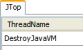
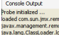
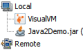
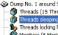

Plugins
There are various plugins available on VisualVM Plugin Center including 3rd party plugins, other plugins can be obtained as separate downloads from their respective authors.
If you need a special feature or support for a proprietary tool, you can implement your own plugin. It's easy, there's a lot of information and sample code available for both NetBeans Platform and VisualVM APIs. Continue to the Write Plugin section for more details.
Get Plugin
To install a plugin from VisualVM Plugin Center follow these steps:
- In VisualVM main menu choose Tools | Plugins, Plugins dialog is opened
- Switch to Available Plugins tab and select the plugin you want to install
- Click the Install button, review and accept plugin license and wait for the plugin to be downloaded and installed
Some third-party plugins need to be installed from a downloaded file:
- In VisualVM main menu choose Tools | Plugins, Plugins dialog is opened
- Switch to Downloaded tab, click the Add Plugins... button, select downloaded plugin .nbm file(s) and click the Open button
- Click the Install button, review and accept plugin license and wait for the plugin to be installed
Available Plugins
Stable
 MBeans Browser.
MBeans Browser plugin provides in general the same functionality as MBeans Browser in JConsole JDK tool: shows MBeans of an application, displays values, operations and notifications.
In VisualVM the browser will be further improved to deliver better usability and support for latest JMX features.
MBeans Browser.
MBeans Browser plugin provides in general the same functionality as MBeans Browser in JConsole JDK tool: shows MBeans of an application, displays values, operations and notifications.
In VisualVM the browser will be further improved to deliver better usability and support for latest JMX features.
Available on VisualVM Plugin Center
JConsole Plugins Container.
JConsole Plugins container allows to use existing JConsole plugins (like JTop) inside VisualVM. The plugins are fully functional, but we suggest to convert them to VisualVM
plugins to better fit VisualVM workflow and UI and benefit from rich VisualVM APIs providing more data sources with lower overhead.
Available on VisualVM Plugin Center
{kind=link}
 VisualVM Extensions.
The intent of this module is to add support for additional functionality (such as new JDKs, JVMs, HotSpot versions, etc.) not supported by the VisualVM core modules at the time VisualVM was released.
It's always a good idea to get this plugin for a fresh VisualVM installation.
VisualVM Extensions.
The intent of this module is to add support for additional functionality (such as new JDKs, JVMs, HotSpot versions, etc.) not supported by the VisualVM core modules at the time VisualVM was released.
It's always a good idea to get this plugin for a fresh VisualVM installation.
Available on VisualVM Plugin Center
In Development
 Visual GC Plugin.
Integration of the Visual GC tool into VisualVM. Visual GC attaches to an application and collects and graphically displays garbage collection, class loader, and HotSpot compiler performance data.
See Visual GC page for more information.
Visual GC Plugin.
Integration of the Visual GC tool into VisualVM. Visual GC attaches to an application and collects and graphically displays garbage collection, class loader, and HotSpot compiler performance data.
See Visual GC page for more information.
Available on VisualVM Plugin Center
 GlassFish Plugin.
GlassFish plugin provides additional information for GlassFish servers like number of active sessions, processed transactions etc. It's also able to monitor each deployed
web application separately.
GlassFish Plugin.
GlassFish plugin provides additional information for GlassFish servers like number of active sessions, processed transactions etc. It's also able to monitor each deployed
web application separately.
Available on VisualVM Plugin Center
BTrace Plugin.
BTrace is a safe, dynamic tracing tool for Java. BTrace inserts tracing actions into the classes of a running Java program and hotswaps the traced program classes. Visit
https://btrace.dev.java.net for more details.
Available in VisualVM source repository
{kind=link}
Third Party
Terracotta Plugin.
Visit Terracotta VisualVM Plugin page at www.terracotta.org for details.
Available at www.terracotta.org
{kind=link}
TDA Plugin.
The Thread Dump Analyzer (TDA) for Java is a small GUI for analyzing Thread Dumps and Heap Information generated by the Sun Java VM. It provides statistic informations about the found thread dumps, gives information about locked monitors and waiting threads and much more.
For detailed description visit https://tda.dev.java.net.
Available at tda.dev.java.net
{kind=link}
Write Plugin
These resources are currently available for VisualVM plugin developers:
A lot of information and sample VisualVM plugins is available on Geertjan's Blog (blog by Geertjan Wielenga). You may send your questions and get assistance on users@visualvm.dev.java.net mailing list (you need to be registered to access the mailing list).